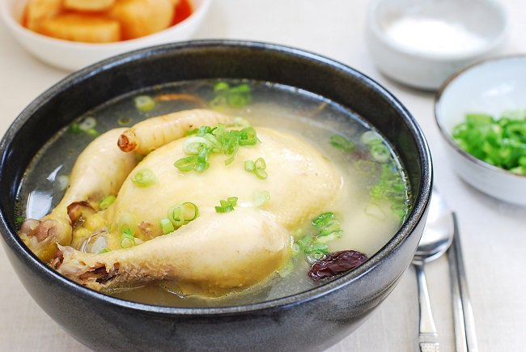
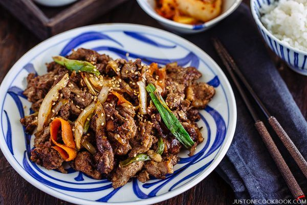

Les recettes
BIBIMBAP
Pour voyager en Corée, osez ce plat typique à base de riz, de viande marinée, de légumes sautés et de sauce piquante. Une recette colorée et originale à tester...
Ingrédients (2 personnes)
250g de riz rond coréen
250g de bœuf haché
1 oignon
1 courgette
2 carottes
120g de shiitakes frais(champignons noir japonais)
1 gousse d'ail
1 c à s de sauce soja
1 c à c de sucre
1 c à c d’huile de sésame
2 c à c de pâte de piment coréen
2 œufs
Huile végétale
Préparation
ÉTAPE 1 :
Rincez le riz plusieurs fois jusqu’à ce que l’eau soit claire puis faites-le cuire par absorption avec l’eau, soit à la casserole, soit dans un cuiseur à riz.
ÉTAPE 2 :
Détaillez la courgette en julienne, sans la peler. Pelez les carottes puis détaillez-les en julienne. Faites cuire 2 œufs au plat.
ÉTAPE 3 :
Mettez la viande hachée dans un bol et râpez l'ail pelé au-dessus du bol. Ajoutez la sauce soja, l’huile de sésame, le sucre, mélanger, couvrir et réserver à température ambiante. Retirez le pied un peu terreux des shiitakés puis coupez en tranches. Réservez chaque légume séparément.
ÉTAPE 4 :
Dans un wok, chauffez une c.à.c. d’huile, faites revenir la julienne de courgette 30 secondes. Remettez un peu d’huile et faites revenir la julienne de carotte 2 minutes. Puis faites sauter les champignons 2 minutes. Faites de même avec les oignons. Ajoutez un peu d’huile et faites revenir la viande jusqu’à ce qu’elle soit cuite. Répartissez le riz dans un grand bol. Disposez séparément les carottes, les courgettes, les oignons, les champignons et la viande. Ajoutez la pâte de piment au centre puis l’œuf au plat au-dessus.
SAMGYETANG "Soupe de poulet au Ginseng"
Soupe de coquelet farci au riz gluant, au ginseng, aux jujubes et à l"ail, que l"on fait longuement mijoter. En Corée, on compte trois jours traditionnels de canicule (sambok) en été, occasion pour beaucoup de Coréens de manger du samgyetang pour surmonter la chaleur.
Ingrédients (4 personnes)
13 verres d"eau
20g de ciboule
1 c à s de sel
1 c à c de poivre
4 jujubes
3g de dasima (diverses racines de plantes Coréennes)
180g de riz glutineux
jus d"astragale : 4 racines d"astragale, 15 verres d"eau
4 racines de ginseng frais
4 gousses d"ail
4 coquelets
Préparation
ÉTAPE 1 :
Videz les coquelets de leurs abats, enlevez la graisse, puis lavez-les soigneusement. Lavez le riz glutineux, faites-le tremper dans de l'eau 2H et laissez égoutter dans une passoire 10 min.
ÉTAPE 2 :
Lavez les racines d'astragale et laissez-les tremper dans l'eau 2 heures. Lavez et nettoyez le ginseng frais et détachez les têtes. Lavez et nettoyez l'ail et les jujubes. Lavez la ciboule et hachez-la.
ÉTAPE 3 :
Mettez les racines d'astragale dans une cocotte d'eau que vous ferez chauffer 20 minutes sur un feu vif. Quand l'eau arrivera à ébullition, baissez le feu et faites mijoter 40 minutes, filtrez-la dans une passoire pour obtenir le jus d'astragale.
ÉTAPE 4 :
Fourrez chaque coquelet avec le riz, le ginseng, l'ail et les jujubes. Croisez les cuisses de chaque coquelet de manière à bien maintenir le tout à l'intérieur.
ÉTAPE 5 :
Versez le jus d'astragale et mettez les poulets dans une cocotte et faites bouillir 20 minutes sur un feu vif. Baissez le feu et faites mijoter 50 minutes jusqu'à ce que la soupe prenne un teint blanc laiteux. Servez avec de la ciboule, du sel et du poivre
BULGOGI "Barbécue Coréen"
Le Bulgogi est un plat de viande de bœuf émincée et marinée avec différents assaisonnements avant d"être grillée sur une plaque préchauffée de barbecue. Il est devenu populaire dans les années 50 quand, dans les restaurants, la viande était servie en tranches fines à la fois pour la rendre plus tendre et réduire le temps d"attente des clients.
Ingrédients (4 personnes)
100g de feuilles de laitue
1 oignon
300g de viande de bœuf (faux-filet)
Sauce d"assaisonnement:
Du poivre
50g de jus de poire
1 c à s d'huile de sésame
½ c à s de graines de sésame
1 c à s d'ail haché
1 c à sde sucre
½ c à s de miel
1 c à s de ciboulette hachée
2 c à s de sauce de soja
Préparation
ÉTAPE 1 :
Coupez le bœuf dans le sens opposé à la texture de la viande, morceaux de 5 cm de largeur, 4 cm de longueur et 0.3 cm d'épaisseur. Épluchez un oignon et coupez-le en rondelles de 0.5 cm d'épaisseur Préparez la sauce d'assaisonnement. Lavez des feuilles de laitue à grande eau.
ÉTAPE 2 :
Ajoutez la sauce d'assaisonnement à la viande et malaxez la préparation. Ajoutez l'oignon, et laissez mariner le tout 30 min.
ÉTAPE 3 :
Faites chauffer une plaque de barbecue, puis faites griller la viande sur un feu vif 3 min d'un côté puis 5 min de l'autre à feu plus doux. Servez avec des feuilles de laitue.